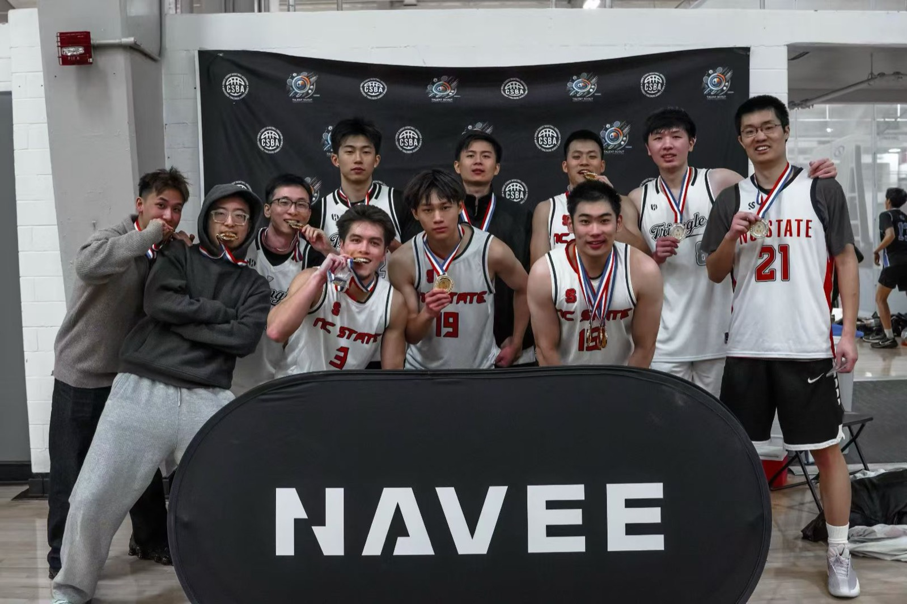
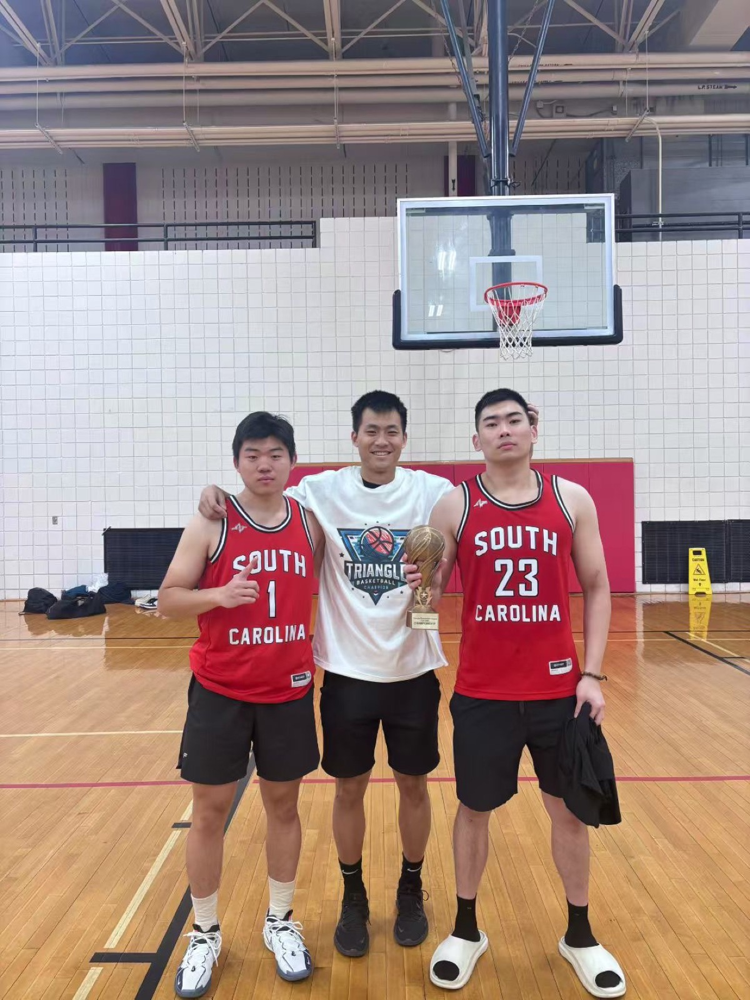
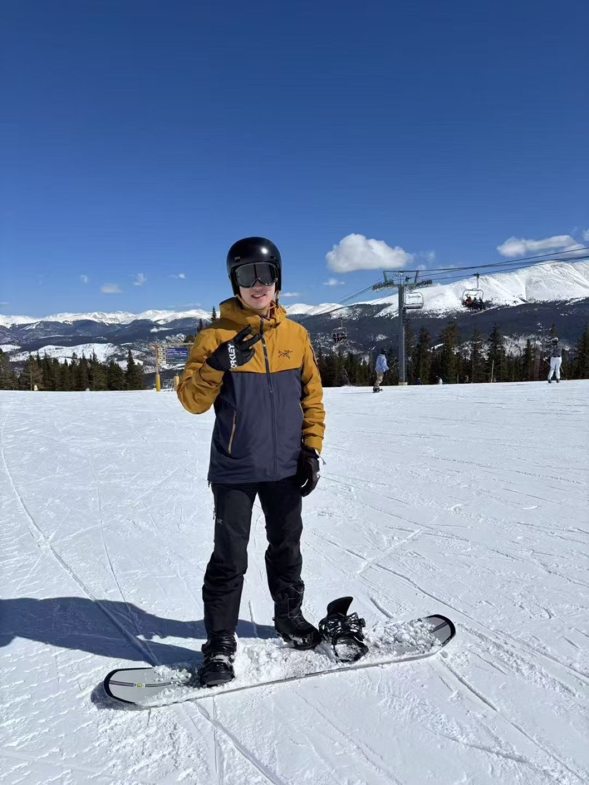
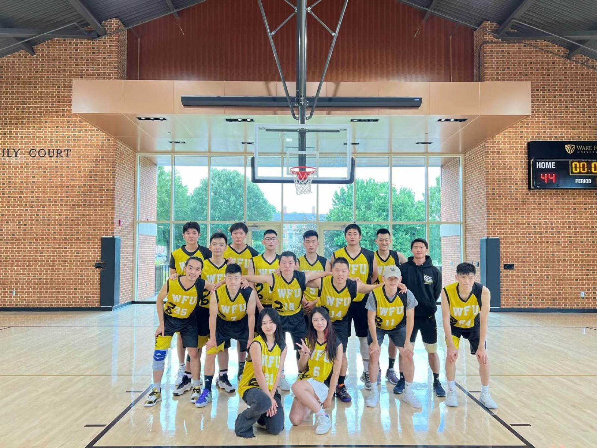
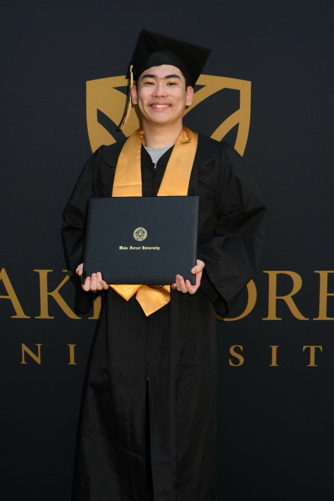
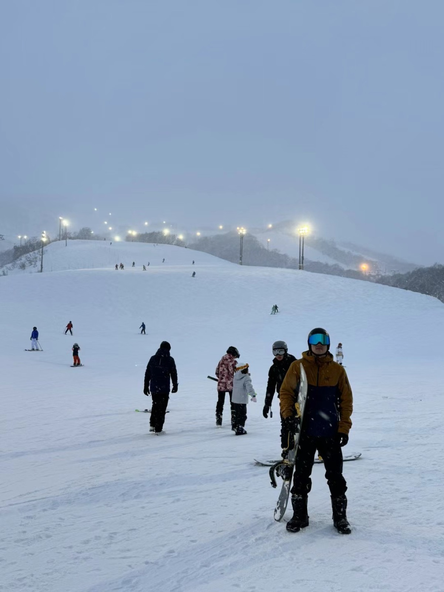
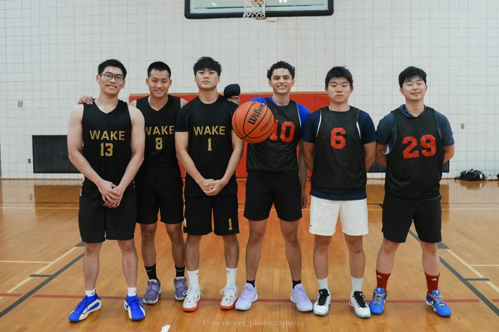
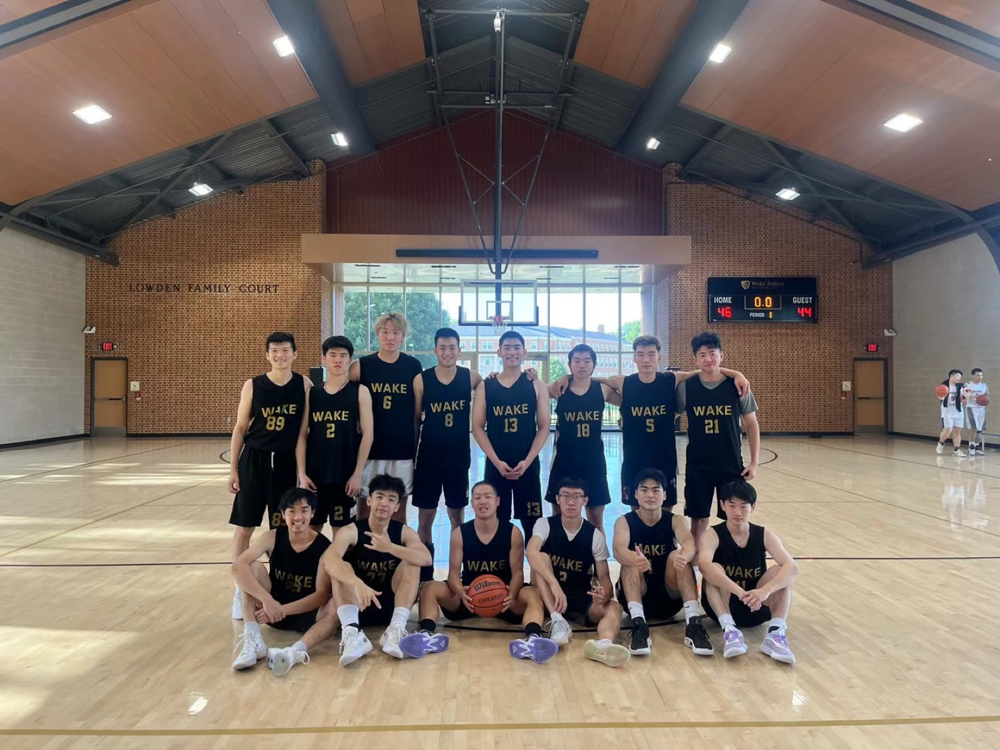
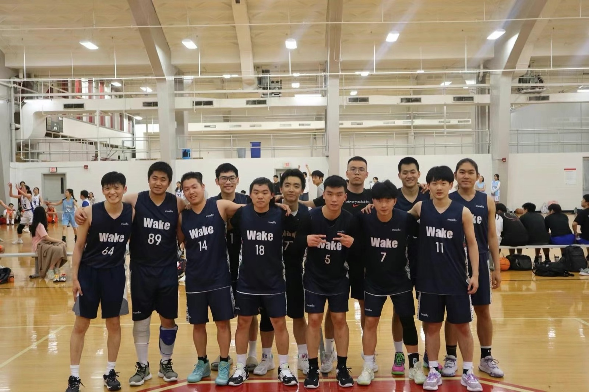

Beyond research
Basketball, board sports, and moments beyond research.
A simpler page for the parts of life that keep me grounded: teammates, movement, winter mountains, and a few hard-earned memories from Wake Forest.








